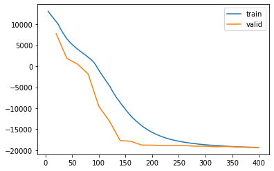
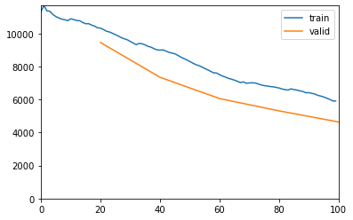
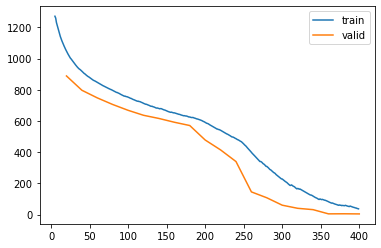

%load_ext autoreload
%autoreload 2The autoreload extension is already loaded. To reload it, use:
%reload_ext autoreload%load_ext autoreload
%autoreload 2The autoreload extension is already loaded. To reload it, use:
%reload_ext autoreloadfrom meteo_imp.kalman.fastai import *
from meteo_imp.kalman.filter import *
from meteo_imp.utils import *
from meteo_imp.data import *
from fastai.tabular.learner import *
from fastai.learner import *
from fastai.callback.all import *
from meteo_imp.kalman.fastai import show_results
import pandas as pd
import numpy as np
import torchIn order to optimize the parameters of a KalmanFilter there are multiple ways, one is to use EM like pykalman another is to optimize using the likelihood like statsmodels is doing.
Statsmodels doesn’t support gap in the dataset
There are 2 main approach for the loss:
use only the filter. This means that the models runs only the kalman filter and for every observations tries to predict the next one. This doesn’t consider the gaps and doesn’t use the smoother. The loss is calculated for the whole period
predict the gap after smoothing. Run the Kalman smoother and then compute the loglikelihood only for the gap
in addition between different batches the loss can be: - averaged - summed
The model predictions are mean and stadard deviation for each observation in the dataset, with shape [n_batches, n_obs, n_variables]
For each variable at each observation if computes the log-likelihood of the univariate distribution, which is then summed across all the variables and all the observation in a batch`
@cache_disk(cache_dir / "full_hai")
def load_data(dtype=np.float32):
return read_fluxnet_csv(hai_path, None, num_dtype=dtype)
hai = load_data()
hai64 = load_data(np.float64)def train_loss(reduction, use_smooth):
model = KalmanFilter.init_random(n_dim_state = hai.shape[1], n_dim_obs=hai.shape[1], dtype=torch.float64).cuda()
model.use_smooth = use_smooth
only_gap = use_smooth
dls = make_dataloader(hai64[:5*20_000], block_len=200, gap_len=10, bs=20) # about 5 year of data
loss_func = loss_func=KalmanLoss(only_gap=only_gap, reduction=reduction)
learn = Learner(dls, model, loss_func, cbs=[ShowGraphCallback, Float64Callback], metrics=[msk_rmse, msk_r2])
learn.fit(20, 1e-2)
return learnload from cache trained models
import dillwith open("models_loss_comparison_30dec.pickle", 'rb') as f:
(l_sum_smooth, l_sum_n_smooth, l_mean_smooth, l_mean_n_smooth) = dill.load(f)l_sum_smooth = train_loss('sum', use_smooth=True)| epoch | train_loss | valid_loss | rmse | r2 | time |
|---|---|---|---|---|---|
| 0 | 10799.557130 | 7761.787664 | 0.494636 | 0.706476 | 00:33 |
| 1 | 6721.645770 | 1878.776931 | 0.464390 | 0.739616 | 00:33 |
| 2 | 4177.969558 | 509.344728 | 0.412180 | 0.793374 | 00:33 |
| 3 | 2260.037030 | -1837.433033 | 0.246094 | 0.927043 | 00:33 |
| 4 | -719.709847 | -9555.917596 | 0.199754 | 0.952821 | 00:33 |
| 5 | -4476.204630 | -13089.933634 | 0.149999 | 0.973490 | 00:34 |
| 6 | -8455.999841 | -17691.481401 | 0.131274 | 0.979583 | 00:33 |
| 7 | -11678.127028 | -17865.444855 | 0.147398 | 0.972290 | 00:34 |
| 8 | -14031.962195 | -18773.763584 | 0.137897 | 0.976673 | 00:34 |
| 9 | -15678.972540 | -18799.284560 | 0.141924 | 0.975796 | 00:35 |
| 10 | -16803.071401 | -18882.290928 | 0.112587 | 0.985104 | 00:36 |
| 11 | -17558.598880 | -18924.760868 | 0.105362 | 0.986287 | 00:33 |
| 12 | -18067.875428 | -18897.525877 | 0.093465 | 0.989777 | 00:33 |
| 13 | -18430.414265 | -19040.231475 | 0.090060 | 0.990478 | 00:35 |
| 14 | -18694.256430 | -19050.077039 | 0.092960 | 0.989644 | 00:33 |
| 15 | -18885.238713 | -19185.962157 | 0.080832 | 0.992125 | 00:33 |
| 16 | -19050.434482 | -19113.437583 | 0.114341 | 0.984587 | 00:33 |
| 17 | -19185.244701 | -19220.514641 | 0.082792 | 0.992028 | 00:33 |
| 18 | -19271.169882 | -19315.973143 | 0.066270 | 0.994715 | 00:33 |
| 19 | -19338.463470 | -19355.567454 | 0.068022 | 0.994381 | 00:33 |

l_sum_smooth.recorder.plot_loss()
show_results(l_sum_smooth, [10, 50, 100])/home/simone/anaconda3/envs/data-science/lib/python3.10/site-packages/fastai/callback/core.py:69: UserWarning: You are shadowing an attribute (__class__) that exists in the learner. Use `self.learn.__class__` to avoid this
warn(f"You are shadowing an attribute ({name}) that exists in the learner. Use `self.learn.{name}` to avoid this")display_as_row(l_sum_smooth.model.get_info(var_names=hai64.columns))| latent | z_0 | z_1 | z_2 |
|---|---|---|---|
| z_0 | 0.8793 | 0.1644 | -0.0996 |
| z_1 | 0.0674 | 0.9061 | 0.0915 |
| z_2 | -0.1359 | 0.1807 | 0.8870 |
trans_cov (Q)
| latent | z_0 | z_1 | z_2 |
|---|---|---|---|
| z_0 | 0.1691 | -0.1189 | -0.1084 |
| z_1 | -0.1189 | 0.1337 | 0.0929 |
| z_2 | -0.1084 | 0.0929 | 0.3573 |
trans_off
| latent | offset |
|---|---|
| z_0 | 0.0393 |
| z_1 | 0.0015 |
| z_2 | 0.1445 |
obs_matrix (H)
| variable | z_0 | z_1 | z_2 |
|---|---|---|---|
| TA | 0.1359 | 0.1995 | -0.0180 |
| SW_IN | -0.0492 | 0.3400 | 0.0636 |
| VPD | 0.3182 | 0.0204 | 0.3036 |
obs_cov (R)
| variable | TA | SW_IN | VPD |
|---|---|---|---|
| TA | 0.0000 | 0.0000 | -0.0000 |
| SW_IN | 0.0000 | 0.0000 | -0.0000 |
| VPD | -0.0000 | -0.0000 | 0.0000 |
obs_off
| variable | offset |
|---|---|
| TA | 0.2448 |
| SW_IN | 0.3635 |
| VPD | 0.2137 |
init_state_mean
| latent | mean |
|---|---|
| z_0 | 0.2512 |
| z_1 | 0.6348 |
| z_2 | 0.9272 |
init_state_cov
| latent | z_0 | z_1 | z_2 |
|---|---|---|---|
| z_0 | 1.0244 | 0.4137 | -0.1930 |
| z_1 | 0.4137 | 1.5316 | 0.9529 |
| z_2 | -0.1930 | 0.9529 | 2.2897 |
l_sum_n_smooth = train_loss('sum', use_smooth=False)| epoch | train_loss | valid_loss | rmse | r2 | time |
|---|---|---|---|---|---|
| 0 | 93576.557506 | 49094.936151 | 40.175671 | -1609.196695 | 00:22 |
| 1 | 55729.858957 | 25465.931891 | 13.037290 | -168.944314 | 00:22 |
| 2 | 40901.222382 | 23625.398854 | 9.227300 | -81.796224 | 00:23 |
| 3 | 32801.561799 | 21803.994577 | 6.553250 | -44.308130 | 00:23 |
| 4 | 28134.386174 | 20767.311986 | 4.905621 | -25.004391 | 00:23 |
| 5 | 25155.250779 | 19650.187167 | 3.522742 | -11.580414 | 00:23 |
| 6 | 23134.458851 | 18852.613585 | 2.670879 | -6.114421 | 00:24 |
| 7 | 21590.111416 | 18724.717731 | 2.463030 | -4.972687 | 00:23 |
| 8 | 20488.952666 | 18046.332419 | 1.743591 | -2.261957 | 00:24 |
| 9 | 19599.282756 | 17686.631493 | 1.554881 | -1.386024 | 00:24 |
| 10 | 18864.805491 | 17168.486468 | 1.231224 | -0.576305 | 00:23 |
| 11 | 18219.402631 | 16717.755567 | 0.993929 | 0.016635 | 00:24 |
| 12 | 17652.747846 | 16358.387093 | 0.948614 | 0.086813 | 00:23 |
| 13 | 17166.811259 | 15819.057481 | 0.743849 | 0.461778 | 00:22 |
| 14 | 16669.927076 | 15380.745776 | 0.729747 | 0.474362 | 00:23 |
| 15 | 16170.134417 | 14886.565936 | 0.694190 | 0.532979 | 00:24 |
| 16 | 15616.390677 | 14280.504826 | 0.653767 | 0.585480 | 00:25 |
| 17 | 15008.060510 | 13473.336895 | 0.579920 | 0.672648 | 00:23 |
| 18 | 14325.386795 | 12561.507037 | 0.566265 | 0.686859 | 00:23 |
| 19 | 13516.621992 | 11399.619833 | 0.543082 | 0.710991 | 00:23 |

l_sum_n_smooth.recorder.plot_loss()
fit a bit more
l_sum_n_smooth.fit(5, 1e-2)| epoch | train_loss | valid_loss | rmse | r2 | time |
|---|---|---|---|---|---|
| 0 | 10346.725174 | 9452.293934 | 0.518965 | 0.736902 | 00:23 |
| 1 | 9009.084750 | 7346.894680 | 0.498220 | 0.756269 | 00:23 |
| 2 | 7605.196719 | 6058.022931 | 0.528030 | 0.725869 | 00:23 |
| 3 | 6738.237530 | 5312.245515 | 0.501561 | 0.751644 | 00:23 |
| 4 | 5908.156025 | 4639.401604 | 0.500624 | 0.751768 | 00:23 |

l_sum_n_smooth.fit(10, 1e-3)| epoch | train_loss | valid_loss | rmse | r2 | time |
|---|---|---|---|---|---|
| 0 | 4075.124830 | 4743.987561 | 0.504186 | 0.748768 | 00:22 |
| 1 | 4534.079512 | 5471.174814 | 0.494402 | 0.757260 | 00:22 |
| 2 | 4162.734111 | 4298.111266 | 0.494588 | 0.758349 | 00:22 |
| 3 | 3856.497019 | 4796.030030 | 0.499238 | 0.751841 | 00:23 |
| 4 | 3702.818910 | 3923.179320 | 0.493548 | 0.759028 | 00:23 |
| 5 | 3538.964910 | 4498.824727 | 0.483678 | 0.767376 | 00:24 |
| 6 | 3410.967823 | 3545.588596 | 0.478077 | 0.772404 | 00:24 |
| 7 | 3237.693183 | 3850.488723 | 0.495080 | 0.754614 | 00:24 |
| 8 | 3111.747285 | 4198.825180 | 0.487525 | 0.764516 | 00:23 |
| 9 | 3083.048830 | 3667.951800 | 0.490212 | 0.759747 | 00:24 |

show_results(l_sum_n_smooth, [10, 50, 100])with smoother enabled just for predictions
l_sum_n_smooth.model.use_smooth = True
display(show_results(l_sum_n_smooth, [10, 50, 100]))
l_sum_n_smooth.model.use_smooth = Falsedisplay_as_row(l_sum_n_smooth.model.get_info(var_names=hai64.columns))| latent | z_0 | z_1 | z_2 |
|---|---|---|---|
| z_0 | 0.9738 | 0.0646 | 0.0733 |
| z_1 | 0.3341 | 0.5742 | 0.3603 |
| z_2 | -0.3077 | 0.4121 | 0.6017 |
trans_cov (Q)
| latent | z_0 | z_1 | z_2 |
|---|---|---|---|
| z_0 | 0.5887 | 0.1503 | -0.3697 |
| z_1 | 0.1503 | 0.0416 | -0.0951 |
| z_2 | -0.3697 | -0.0951 | 0.2325 |
trans_off
| latent | offset |
|---|---|
| z_0 | 0.0393 |
| z_1 | -0.0971 |
| z_2 | 0.0904 |
obs_matrix (H)
| variable | z_0 | z_1 | z_2 |
|---|---|---|---|
| TA | 0.4275 | 0.1589 | 0.7232 |
| SW_IN | 0.1958 | 0.8560 | 0.3983 |
| VPD | 0.3929 | 0.3593 | 0.7669 |
obs_cov (R)
| variable | TA | SW_IN | VPD |
|---|---|---|---|
| TA | 0.1843 | -0.0151 | -0.0008 |
| SW_IN | -0.0151 | 0.0013 | 0.0001 |
| VPD | -0.0008 | 0.0001 | 0.0000 |
obs_off
| variable | offset |
|---|---|
| TA | 0.5145 |
| SW_IN | 0.8793 |
| VPD | 0.6626 |
init_state_mean
| latent | mean |
|---|---|
| z_0 | -0.0205 |
| z_1 | -0.6986 |
| z_2 | -0.6000 |
init_state_cov
| latent | z_0 | z_1 | z_2 |
|---|---|---|---|
| z_0 | 1.8298 | 1.1307 | -0.6162 |
| z_1 | 1.1307 | 1.2855 | 0.1820 |
| z_2 | -0.6162 | 0.1820 | 0.7764 |
l_mean_smooth = train_loss('mean', use_smooth=True)| epoch | train_loss | valid_loss | rmse | r2 | time |
|---|---|---|---|---|---|
| 0 | 697.162786 | 630.356973 | 0.503804 | 0.739012 | 00:36 |
| 1 | 635.893690 | 554.948438 | 0.397441 | 0.837237 | 00:33 |
| 2 | 573.158679 | 438.329959 | 0.397376 | 0.839449 | 00:33 |
| 3 | 443.483282 | 104.015152 | 0.415593 | 0.825035 | 00:34 |
| 4 | 279.839509 | -134.222046 | 0.440517 | 0.801995 | 00:33 |
| 5 | 73.469916 | -312.444000 | 0.405823 | 0.831356 | 00:33 |
| 6 | -80.695937 | -384.546196 | 0.409707 | 0.827130 | 00:33 |
| 7 | -197.950462 | -445.921780 | 0.409722 | 0.827629 | 00:33 |
| 8 | -283.184402 | -451.063827 | 0.409284 | 0.828156 | 00:34 |
| 9 | -340.951170 | -454.172981 | 0.406012 | 0.830759 | 00:34 |
| 10 | -379.005242 | -456.886911 | 0.399631 | 0.835787 | 00:33 |
| 11 | -417.681836 | -581.048350 | 0.137346 | 0.980816 | 00:33 |
| 12 | -524.525933 | -843.416952 | 0.122917 | 0.984063 | 00:33 |
| 13 | -655.300585 | -940.494837 | 0.112013 | 0.987288 | 00:33 |
| 14 | -754.148642 | -954.246318 | 0.106991 | 0.988218 | 00:33 |
| 15 | -823.230645 | -964.190164 | 0.093932 | 0.990694 | 00:33 |
| 16 | -870.296853 | -964.511931 | 0.097596 | 0.990023 | 00:33 |
| 17 | -902.821560 | -966.711134 | 0.083416 | 0.992802 | 00:33 |
| 18 | -925.295414 | -974.465392 | 0.070724 | 0.994710 | 00:36 |
| 19 | -942.501159 | -981.922380 | 0.061404 | 0.996135 | 00:34 |

l_mean_smooth.recorder.plot_loss()
show_results(l_mean_smooth, [10, 50, 100])display_as_row(l_mean_smooth.model.get_info(var_names=hai64.columns))| latent | z_0 | z_1 | z_2 |
|---|---|---|---|
| z_0 | 1.0959 | -0.1656 | -0.0462 |
| z_1 | 0.1858 | 0.6684 | -0.1010 |
| z_2 | -0.0301 | 0.0735 | 0.9870 |
trans_cov (Q)
| latent | z_0 | z_1 | z_2 |
|---|---|---|---|
| z_0 | 0.2404 | 0.3451 | 0.0008 |
| z_1 | 0.3451 | 0.5604 | -0.0763 |
| z_2 | 0.0008 | -0.0763 | 0.3327 |
trans_off
| latent | offset |
|---|---|
| z_0 | 0.5843 |
| z_1 | 0.5746 |
| z_2 | 0.3402 |
obs_matrix (H)
| variable | z_0 | z_1 | z_2 |
|---|---|---|---|
| TA | 0.2666 | -0.1751 | -0.0240 |
| SW_IN | -0.0178 | 0.2368 | 0.1899 |
| VPD | 0.3308 | -0.2863 | 0.0118 |
obs_cov (R)
| variable | TA | SW_IN | VPD |
|---|---|---|---|
| TA | 0.0000 | 0.0000 | 0.0000 |
| SW_IN | 0.0000 | 0.0000 | -0.0000 |
| VPD | 0.0000 | -0.0000 | 0.0000 |
obs_off
| variable | offset |
|---|---|
| TA | 0.5414 |
| SW_IN | 0.4390 |
| VPD | 0.6652 |
init_state_mean
| latent | mean |
|---|---|
| z_0 | 0.7301 |
| z_1 | 0.3346 |
| z_2 | 0.2617 |
init_state_cov
| latent | z_0 | z_1 | z_2 |
|---|---|---|---|
| z_0 | 1.4340 | 0.7932 | 0.2754 |
| z_1 | 0.7932 | 1.1764 | 0.2383 |
| z_2 | 0.2754 | 0.2383 | 0.5386 |
l_mean_n_smooth = train_loss('mean', use_smooth=False)| epoch | train_loss | valid_loss | rmse | r2 | time |
|---|---|---|---|---|---|
| 0 | 1057.629457 | 888.496646 | 1.018840 | -0.055726 | 00:22 |
| 1 | 923.925165 | 796.762860 | 0.674683 | 0.544355 | 00:22 |
| 2 | 851.088850 | 747.840067 | 0.596738 | 0.645535 | 00:23 |
| 3 | 798.429587 | 705.430505 | 0.606329 | 0.634376 | 00:23 |
| 4 | 754.539451 | 668.123294 | 0.616092 | 0.622592 | 00:23 |
| 5 | 715.262041 | 636.254135 | 0.611814 | 0.628103 | 00:23 |
| 6 | 681.105511 | 615.883004 | 0.617857 | 0.620452 | 00:23 |
| 7 | 651.706290 | 591.641635 | 0.601030 | 0.640745 | 00:23 |
| 8 | 625.154468 | 570.554773 | 0.592957 | 0.650125 | 00:23 |
| 9 | 593.910834 | 477.784763 | 0.467038 | 0.783076 | 00:23 |
| 10 | 542.761901 | 414.206483 | 0.429209 | 0.817010 | 00:23 |
| 11 | 488.455552 | 339.528152 | 0.422597 | 0.821515 | 00:24 |
| 12 | 404.451756 | 144.976959 | 0.433326 | 0.812972 | 00:23 |
| 13 | 308.818492 | 107.266816 | 0.447009 | 0.800872 | 00:23 |
| 14 | 228.120486 | 59.730369 | 0.401824 | 0.838990 | 00:23 |
| 15 | 164.371803 | 39.778540 | 0.411961 | 0.830528 | 00:23 |
| 16 | 121.075008 | 31.160392 | 0.421206 | 0.823260 | 00:23 |
| 17 | 84.520273 | 4.141408 | 0.420663 | 0.823536 | 00:24 |
| 18 | 57.648469 | 4.640894 | 0.418233 | 0.825792 | 00:24 |
| 19 | 36.316722 | 3.784453 | 0.421853 | 0.822295 | 00:23 |

l_mean_n_smooth.recorder.plot_loss()
show_results(l_mean_n_smooth, [10, 50, 100])l_mean_n_smooth.model.use_smooth = True
display(show_results(l_mean_n_smooth, [10, 50, 100]))
l_mean_n_smooth.model.use_smooth = Falsedisplay_as_row(l_mean_n_smooth.model.get_info(var_names=hai64.columns))| latent | z_0 | z_1 | z_2 |
|---|---|---|---|
| z_0 | 0.8564 | 0.3303 | 0.2741 |
| z_1 | 0.0411 | 0.5239 | -0.3802 |
| z_2 | 0.1810 | -0.3956 | 0.6654 |
trans_cov (Q)
| latent | z_0 | z_1 | z_2 |
|---|---|---|---|
| z_0 | 0.1339 | 0.1567 | -0.1591 |
| z_1 | 0.1567 | 0.1839 | -0.1865 |
| z_2 | -0.1591 | -0.1865 | 0.1893 |
trans_off
| latent | offset |
|---|---|
| z_0 | -0.1275 |
| z_1 | 0.0851 |
| z_2 | 0.1455 |
obs_matrix (H)
| variable | z_0 | z_1 | z_2 |
|---|---|---|---|
| TA | 0.3125 | 0.3005 | 0.5561 |
| SW_IN | 0.1724 | 0.6300 | 0.5023 |
| VPD | 0.1824 | 0.6207 | 0.7000 |
obs_cov (R)
| variable | TA | SW_IN | VPD |
|---|---|---|---|
| TA | 0.0000 | -0.0000 | 0.0001 |
| SW_IN | -0.0000 | 0.0000 | -0.0016 |
| VPD | 0.0001 | -0.0016 | 0.1801 |
obs_off
| variable | offset |
|---|---|
| TA | 0.4672 |
| SW_IN | 0.0952 |
| VPD | 0.2722 |
init_state_mean
| latent | mean |
|---|---|
| z_0 | -1.0630 |
| z_1 | 0.2947 |
| z_2 | -0.3536 |
init_state_cov
| latent | z_0 | z_1 | z_2 |
|---|---|---|---|
| z_0 | 3.4376 | 0.9167 | 0.0107 |
| z_1 | 0.9167 | 0.5092 | -0.3225 |
| z_2 | 0.0107 | -0.3225 | 0.4000 |
import dillwith open("models_loss_comparison_30dec.pickle", 'wb') as f:
# dill.dump([l_sum_smooth, l_sum_n_smooth, l_mean_smooth, l_mean_n_smooth], f)interact_results(l_sum_smooth, hai64)<function meteo_imp.kalman.fastai.interact_results.<locals>._inner(gap_len, items_idx, block_len, **var_names)>